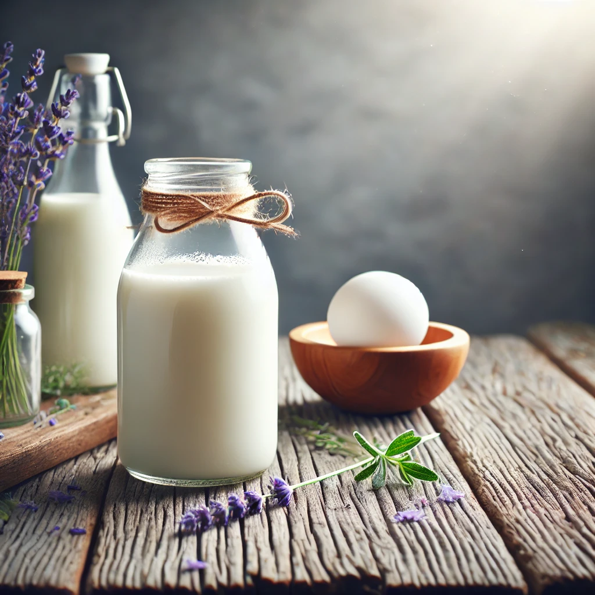
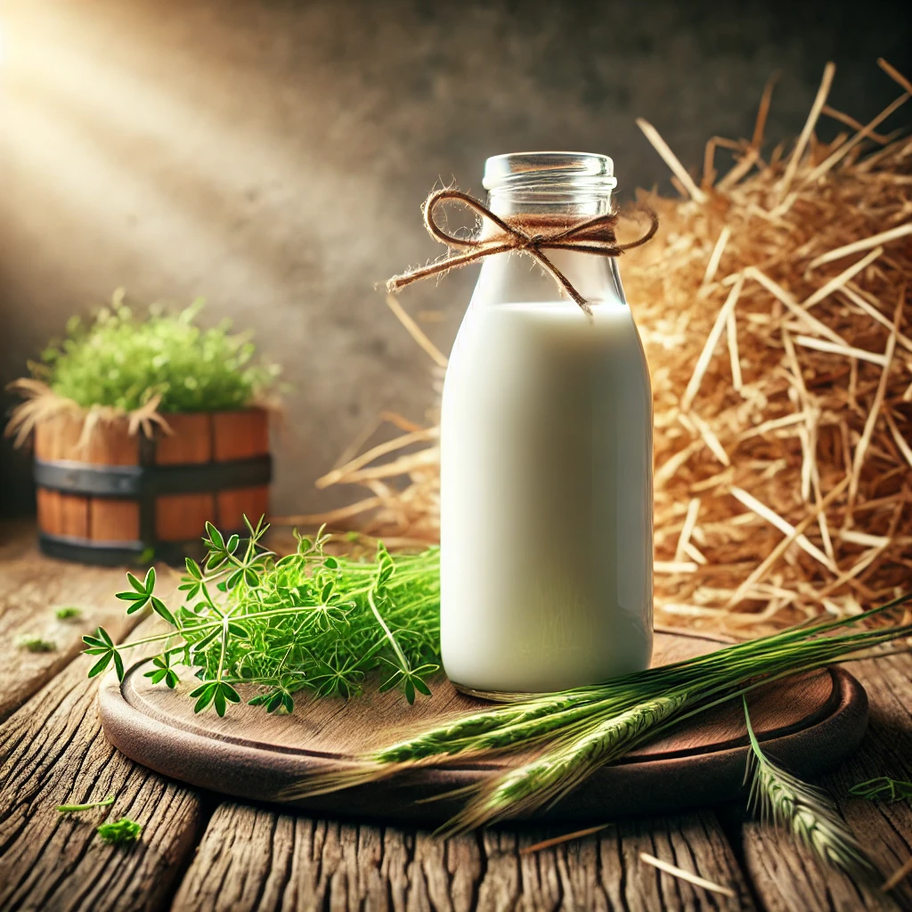
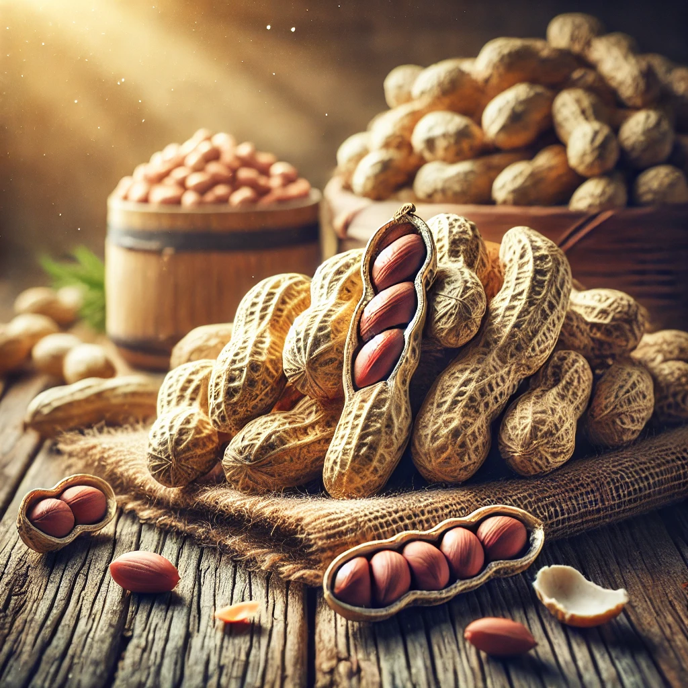
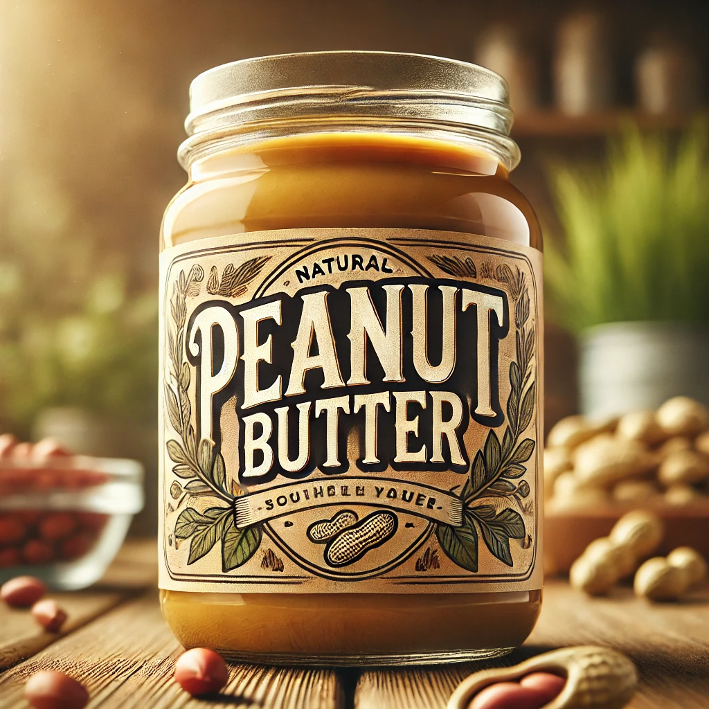
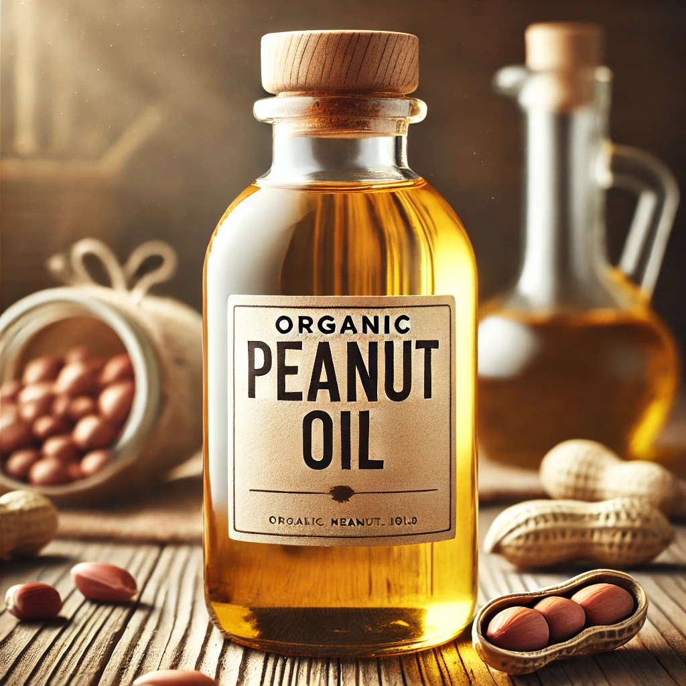

Organic Goat Milk
Fresh, easily digestible milk from free-range goats.
Fresh goat milk, A2 grass-fed cow milk, and rainwater-grown peanuts — free from chemicals and crafted with care for your family.
Thoughtfully crafted dairy and nut products to bring natural nutrition to your everyday life.
Fresh, easily digestible milk from free-range goats.
Pure A2 milk from grass-fed cows, gentle on the stomach.
Rainwater-irrigated peanuts, rich in natural flavour and nutrients.

Fresh, nutritious, and chemical-free goat milk sourced from free-range goats.

Pure A2 milk from grass-fed cows, free from harmful chemicals and additives.

Grown using only natural rainwater, ensuring the purest, most flavorful peanuts.

Made from the finest organic peanuts, blended to perfection for a creamy texture.

A healthy, all-natural oil for cooking or skin care, derived from premium peanuts.
We believe real food should be simple, honest, and as close to nature as possible.
Our farms follow natural, chemical-free practices so every sip and bite is clean and safe for your family.
Goats and cows graze freely on open pastures, producing nutrient-rich milk the way nature intended.
Our peanuts are grown with natural rainwater, preserving soil health and delivering exceptional flavour.
From milking to bottling and packaging, we handle every step with care, transparency, and hygiene.
Reach us directly on WhatsApp for fresh milk subscriptions, product questions, or bulk and wholesale enquiries.
WhatsApp: +91 00000 00000
Address: 123 Organic Lane, Green City